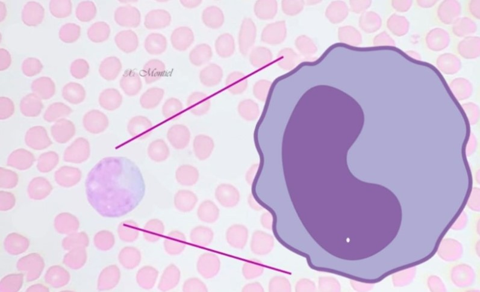

SERIE BLANCA
LeucocitosLos leucocitos, o glóbulos blancos, son células con núcleo. Hay un promedio de 5000 a 9000 leucocitos por mm3 en las sangre humana normal. Éstas células no presentan una forma constante debido a su capacidad para efectuar movimientos ameboides. A diferencia de los eritrocitos, los leucocitos solo son funcionales en un grado pequeño en el torrente sanguíneo. Presentan su mayor actividad en los tejidos conectivos. Su capacidad para realizar movimientos ameboides los capacita para ceparar las células de las células de las paredes capilares (endotelio) y entrar a estos vasos o salir de ellos (diapédesis). En general los leucocitos participan en los mecanismos de defensa celular y humoral del organismo contra materiales extarños. Es por esta razón que se encuentran en número considerable en el tejido conectivo. |
Imagen que muestra los diferentes tipos de glóbulos blancos en una muestra de sangre vista al microscopio. |
Leucocitos agranulososExisten dos tipos de leucocitos agranulosos: linfocitos, que son células pequeñas con citoplasma escaso, y monocitos , que son células ligeramente más grandes que contienen cantidades algo mayores de citoplasma. LinfocitosEn la sangre humana, los linfocitos son células esféricas con diámetro que varía de 6 a 8 µm, aunque algunas puedenser mayores. Representan 20 a 35% del número total de glóbulos blancos. En los linfocitos pequeños, el núcleo es tan grande que llena casi toda la célula, dejando solo un estrecho anillo de citoplasma. La cantidad de citoplasma es tan pequeña que en las preparaciones de laboratorio es el núcleo la única parte de un linfocito pequeño que se puede identificar. El núcleo aparece esférico y por lo general muestra una pequeña muesca en un lado. Esta muesca es mas evidente en el linfocito grande. |

Imagen que muestra un linfocito en una muestra de sangre vista al microscopio.  Imagen que muestra un monocito en una muestra de sangre vista al microscopio. |
MonocitosSon células grandes con diámetro promedio de 9 a 12 µm, pero en los frotis secos se pueden aplanar para alcanzar un diámetro de 20 µm o más. Constituyen 3 a 8% de los leucocitos de la sangre. En estas células el núcleo es exéntrico, de forma ovoide o reniforme y puede mostrar una profunda depresión o forma de herradura en las células más viejas. Este núcleo no se tiñe de color tan intenso como el del linfocito, debido a la naturaleza finamente granulosa de la cromatina que se dispone en forma de una red delicada. Hay una relativa abundancia de citoplasma que con la tinción de Wright es de color azul grisáseo pálido en los frotis secos. A menudo presenta aspecto vacuolado o reticulado y se ve que contiene una población de gránulos azurófilos, que son más abundantes, pero más pequeños que en los linfocitos. Estos gránulos son lisososmas primarios. |
Imagen que representa la fagosistosis de un glóbulo blanco. |